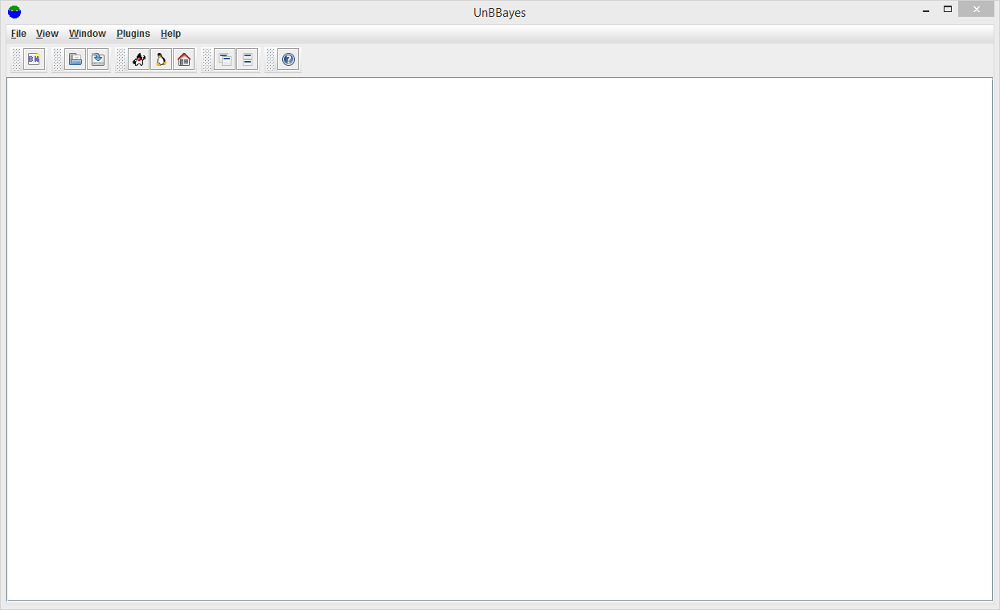

An Introduction to UnBBayes
UnBBayes is a probabilistic network framework written in Java. It has both a GUI and an API with inference, sampling, learning and evaluation. It supports Bayesian networks, influence diagrams, MSBN, OOBN, HBN, MEBN/PR-OWL, PRM, structure, parameter and incremental learning.
Features
- Probabilistic Networks:
- Bayesian Network (BN)
- Junction Tree
- Likelihood Weighting
- Gibbs
- Influence Diagram (ID)
- Multiply Sectioned Bayesian Network (MSBN)
- Hybrid Bayesian Network (HBN)
- Gaussian Mixture - Propagation under development
- Object-Oriented Bayesian Network (OOBN)
- Bayesian Network (BN)
- FOL Probabilistic Network:
- Multi-Entity Bayesian Network (MEBN)
- Probabilistic Ontology Language (PR-OWL)
- Learning Bayesian Network:
- K2
- B
- CBL-A
- CBL-B
- Incremental Learning
- Sampling
- Logic
- Likelihood Weighting
- Gibbs
- Classification Performance Evaluation
- Evaluation using Logic Sampling
- Evaluation using Likelihood Weighting Sampling
Installation
- Go to https://sourceforge.net/projects/unbbayes/files/latest/download?source=typ_redirect to download zip file
- Extract file unbbayes-4.21.18.zip to unbbayes-4.21.18 folder
- Open unbbayes-4.21.18 folder, double click to unbbayes.bat
unbbayes-4.21.18 open 
Official Videos
In this section, I add some official videos from unbbayes team. There are overview
Overview
In this video we are going to show the basic function we have in UnBBayes. This is the first of many tutorials we have been creating to support the demand for documentation on how to use UnBBayes. We hope this will help UnBBayes' user community to grow even more.
Bayesian Network
In this video we are going to show how to create and compile a Bayesian Network (BN) in UnBBayes. This is our second of many video tutorials we have been creating to support the demand for documentation on how to use UnBBayes. We hope this will help UnBBayes' user community to grow even more.
UnBBayes Performance Evaluation for Multi-Sensor Classification Systems
In this video we are going to show how to do a performance evaluation for multi-sensor classification systems in UnBBayes. It has been a while we do not post new videos, but hopefully this third one is just one more of many tutorials we will have available to support the demand for documentation on how to use UnBBayes. We hope this will help UnBBayes' user community to grow even more.
Probabilistic Ontology Modeling Using UnBBayes
In this video we discuss how to model probabilistic ontologies using PR-OWL/MEBN in UnBBayes. This session was a video conference between PhD students from the Institute of Business Administration (http://www.iba.edu.pk) and Rommel Carvalho from George Mason University (http://www.gmu.edu).